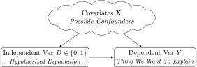
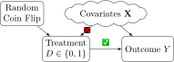
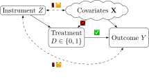
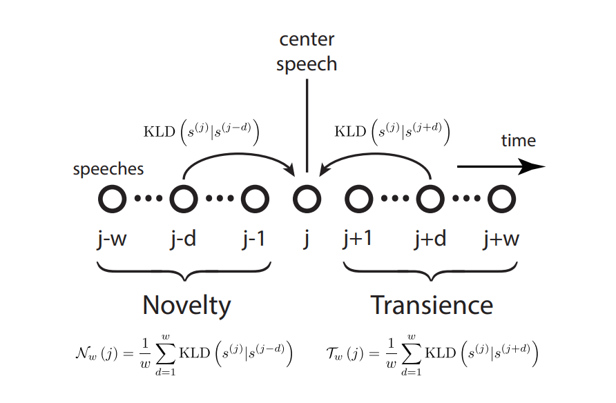
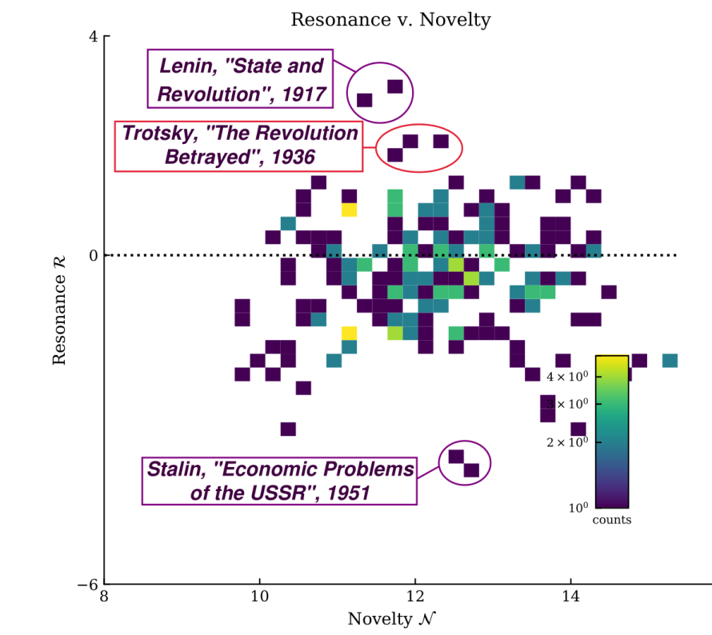

Week 10: Text-as-Data
DSAN 5650: Causal Inference for Computational Social Science
Summer 2025, Georgetown University
Wednesday, July 23, 2025
Schedule
Today’s Planned Schedule:
| Start | End | Topic | |
|---|---|---|---|
| Lecture | 6:30pm | 6:45pm | Final Projects: Dependent vs. Independent Vars → |
| 6:45pm | 7:10pm | Instrumental Variables Lite → | |
| 7:10pm | 8:00pm | Text-as-Data Part 1: TAD in General → | |
| Break! | 8:00pm | 8:10pm | |
| 8:10pm | 9:00pm | Text-as-Data Part 2: Causal Text Analysis → |
\[ \DeclareMathOperator*{\argmax}{argmax} \DeclareMathOperator*{\argmin}{argmin} \newcommand{\bigexp}[1]{\exp\mkern-4mu\left[ #1 \right]} \newcommand{\bigexpect}[1]{\mathbb{E}\mkern-4mu \left[ #1 \right]} \newcommand{\definedas}{\overset{\small\text{def}}{=}} \newcommand{\definedalign}{\overset{\phantom{\text{defn}}}{=}} \newcommand{\eqeventual}{\overset{\text{eventually}}{=}} \newcommand{\Err}{\text{Err}} \newcommand{\expect}[1]{\mathbb{E}[#1]} \newcommand{\expectsq}[1]{\mathbb{E}^2[#1]} \newcommand{\fw}[1]{\texttt{#1}} \newcommand{\given}{\mid} \newcommand{\green}[1]{\color{green}{#1}} \newcommand{\heads}{\outcome{heads}} \newcommand{\iid}{\overset{\text{\small{iid}}}{\sim}} \newcommand{\lik}{\mathcal{L}} \newcommand{\loglik}{\ell} \DeclareMathOperator*{\maximize}{maximize} \DeclareMathOperator*{\minimize}{minimize} \newcommand{\mle}{\textsf{ML}} \newcommand{\nimplies}{\;\not\!\!\!\!\implies} \newcommand{\orange}[1]{\color{orange}{#1}} \newcommand{\outcome}[1]{\textsf{#1}} \newcommand{\param}[1]{{\color{purple} #1}} \newcommand{\pgsamplespace}{\{\green{1},\green{2},\green{3},\purp{4},\purp{5},\purp{6}\}} \newcommand{\pedge}[2]{\require{enclose}\enclose{circle}{~{#1}~} \rightarrow \; \enclose{circle}{\kern.01em {#2}~\kern.01em}} \newcommand{\pnode}[1]{\require{enclose}\enclose{circle}{\kern.1em {#1} \kern.1em}} \newcommand{\ponode}[1]{\require{enclose}\enclose{box}[background=lightgray]{{#1}}} \newcommand{\pnodesp}[1]{\require{enclose}\enclose{circle}{~{#1}~}} \newcommand{\purp}[1]{\color{purple}{#1}} \newcommand{\sign}{\text{Sign}} \newcommand{\spacecap}{\; \cap \;} \newcommand{\spacewedge}{\; \wedge \;} \newcommand{\tails}{\outcome{tails}} \newcommand{\Var}[1]{\text{Var}[#1]} \newcommand{\bigVar}[1]{\text{Var}\mkern-4mu \left[ #1 \right]} \]
Final Project Timeline
- Proposal (Abstract on Notion):
- Submitted to instructors by Tuesday, July 15th, 6:30pm EDT ✅
- Approved by an instructor by Tuesday, July 22nd, 6:30pm EDT ✅
- Final Draft:
- Submitted to instructors for review by Friday, August 1st, 5:59pm EDT
- Approved by an instructor by Monday, August 4th, 11:59pm EDT
- Final Submission:
- Submitted via Canvas by Friday, August 8th, 5:59pm EDT
Independent vs. Dependent Variables
- Starting point: puzzle in social world!
- Why are fertility rates dropping in these countries?
- What explains the move from “quietism” to “Political Islam”?
- What behaviors produce positive health outcomes in old age?

Independent Variable / Treatment \(D\)
- What happens when…
- [Someone gets a degree/internship]
- [There are casualties in a conflict]
- Start with independent var \(\Rightarrow\) “What are the effects of this cause?”
Dependent Variable / Outcome \(Y\)
- “I wonder what explains this?”
- [Differences in earnings]
- [Probability of news story]
- Start with dependent var \(\Rightarrow\) “What are the causes of this effect?”
Instrumental Variables
If randomization works to obtain causal effects…

…Find something random in the causal system, use e.g. matching to “force” the same scenario!

General form: \(\text{Effect}(D \rightarrow Y) = \frac{\text{Effect}(Z \rightarrow Y)}{\text{Effect}(Z \rightarrow D)}\) (Try “plugging in” \(Z\) = Coin Flip!)
\[ \beta_{\text{IV}}^{\text{Wald}} = \frac{ \mathbb{E}[Y_i \mid Z_i = 1] - \mathbb{E}[Y_i \mid Z_i = 0] }{ \mathbb{E}[D_i \mid Z_i = 1] - \mathbb{E}[D_i \mid Z_i = 0] }, \; \beta_{\text{IV}} = \frac{\text{Cov}[Y, Z]}{\text{Cov}[D,Z]} \]
Birthday as Instrument
- Mini-Lab Time!
Text-as-Data Part 1: TAD in General
- Computers don’t exactly “read” text! They process numeric representations of some feature(s) of the text
- Ex: sentiment, topic, embedding in semantic space
- \(\Rightarrow\) When we do causal inference with text, we’re not studying \(D \rightarrow Y\) itself! Instead, we study:
- Text as Outcome: \(D \rightarrow g(Y)\) and/or
- Text as Treatment: \(g(D) \rightarrow Y\)
Text-as-Data Part 2: Causal Inferences with Text
(The necessity for sample splitting!)
- Recall the media effects example from Week 3; here an experiment where:
- Treatment (\(D_i = 1\)) watches presidential debate (control doesn’t watch anything)
- Outcome \(Y_i\): We estimate a topic model of the respondent’s verbal answer to “what do you think are the most important issues in US politics today?”
| \(Y_i \mid \textsf{do}(D_i \leftarrow 1)\) | \(Y_i \mid \textsf{do}(D_i \leftarrow 0)\) | |
|---|---|---|
| Person 1 | Candidate’s Morals | Taxes |
| Person 2 | Candidate’s Morals | Taxes |
| Person 3 | Polarization | Immigration |
| Person 4 | Polarization | Immigration |
“Discovered” Topics Depend on the Data 😟
| \(Y_i \mid \textsf{do}(D_i \leftarrow 1)\) | \(Y_i \mid \textsf{do}(D_i \leftarrow 0)\) | |
|---|---|---|
| Person 1 | Candidate’s Morals | Taxes |
| Person 2 | Candidate’s Morals | Taxes |
| Person 3 | Polarization | Immigration |
| Person 4 | Polarization | Immigration |
| Actual Assignment | Outcome \(Y_i\) | |
|---|---|---|
| Person 1 | \(D_1 = 1\) | Morals |
| Person 2 | \(D_2 = 1\) | Morals |
| Person 3 | \(D_3 = 0\) | Immigration |
| Person 4 | \(D_4 = 0\) | Immigration |
| Actual Assignment | Outcome \(Y_i\) | |
|---|---|---|
| Person 1 | \(D_1 = 1\) | Morals |
| Person 2 | \(D_2 = 0\) | Taxes |
| Person 3 | \(D_3 = 1\) | Polarization |
| Person 4 | \(D_4 = 0\) | Immigration |
The Solution? Sample Splitting!
- Machine learning noticed this long ago: the goal is a model that generalizes, not memorizes!
Topic Models
- Intuition is just: let’s model latent topics “underlying” observed words
| Section | Keywords |
|---|---|
| U.S. News | state, court, federal, republican |
| World News | government, country, officials, minister |
| Arts | music, show, art, dance |
| Sports | game, league, team, coach |
| Real Estate | home, bedrooms, bathrooms, building |
- Already, by just classifying articles based on these keyword counts:
| Arts | Real Estate | Sports | U.S. News | World News | |
|---|---|---|---|---|---|
| Correct | 3020 | 690 | 4860 | 1330 | 1730 |
| Incorrect | 750 | 60 | 370 | 1100 | 590 |
| Accuracy | 0.801 | 0.920 | 0.929 | 0.547 | 0.746 |
Topic Models as PGMs

From Blei (2012)
…Unlocks a world of social modeling through text!
Cross-Sectional Analysis
Blaydes, Grimmer, and McQueen (2018)
Influence Over Time
From Barron et al. (2018)
Textual Influence Over Time
References
DSAN 5650 Week 10: Text-as-Data